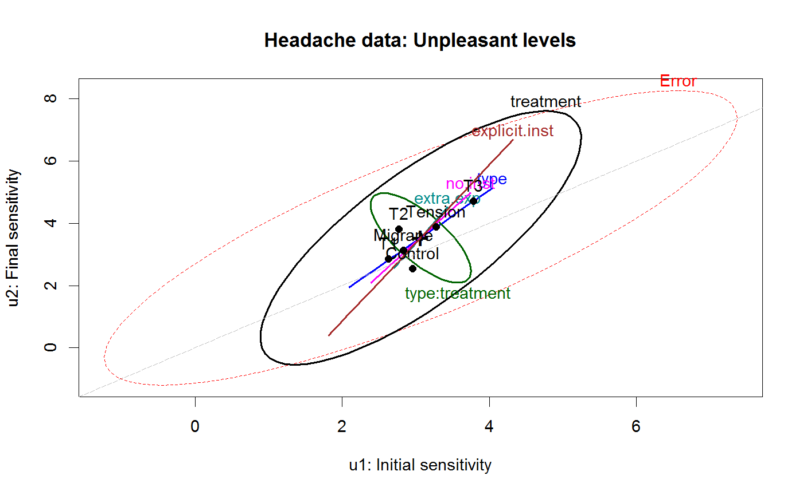
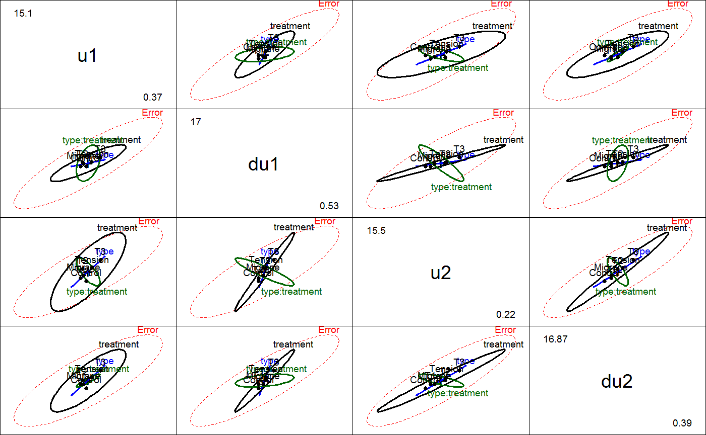

<!-- Generated by pkgdown: do not edit by hand -->
<!DOCTYPE html>
<html>
  <head>
  <meta charset="utf-8">
<meta http-equiv="X-UA-Compatible" content="IE=edge">
<meta name="viewport" content="width=device-width, initial-scale=1.0">

<title>Treatment of Headache Sufferers for Sensitivity to Noise — Headache • heplots</title>

<!-- jquery -->
<script src="https://code.jquery.com/jquery-3.1.0.min.js" integrity="sha384-nrOSfDHtoPMzJHjVTdCopGqIqeYETSXhZDFyniQ8ZHcVy08QesyHcnOUpMpqnmWq" crossorigin="anonymous"></script>
<!-- Bootstrap -->
<link href="https://maxcdn.bootstrapcdn.com/bootswatch/3.3.7/cerulean/bootstrap.min.css" rel="stylesheet" crossorigin="anonymous">

<script src="https://maxcdn.bootstrapcdn.com/bootstrap/3.3.7/js/bootstrap.min.js" integrity="sha384-Tc5IQib027qvyjSMfHjOMaLkfuWVxZxUPnCJA7l2mCWNIpG9mGCD8wGNIcPD7Txa" crossorigin="anonymous"></script>

<!-- Font Awesome icons -->
<link href="https://maxcdn.bootstrapcdn.com/font-awesome/4.6.3/css/font-awesome.min.css" rel="stylesheet" integrity="sha384-T8Gy5hrqNKT+hzMclPo118YTQO6cYprQmhrYwIiQ/3axmI1hQomh7Ud2hPOy8SP1" crossorigin="anonymous">


<!-- pkgdown -->
<link href="../pkgdown.css" rel="stylesheet">
<script src="../jquery.sticky-kit.min.js"></script>
<script src="../pkgdown.js"></script>
  
  
<!-- mathjax -->
<script src='https://mathjax.rstudio.com/latest/MathJax.js?config=TeX-AMS-MML_HTMLorMML'></script>

<!--[if lt IE 9]>
<script src="https://oss.maxcdn.com/html5shiv/3.7.3/html5shiv.min.js"></script>
<script src="https://oss.maxcdn.com/respond/1.4.2/respond.min.js"></script>
<![endif]-->


  </head>

  <body>
    <div class="container template-reference-topic">
      <header>
      <div class="navbar navbar-default navbar-fixed-top" role="navigation">
  <div class="container">
    <div class="navbar-header">
      <button type="button" class="navbar-toggle collapsed" data-toggle="collapse" data-target="#navbar">
        <span class="icon-bar"></span>
        <span class="icon-bar"></span>
        <span class="icon-bar"></span>
      </button>
      <a class="navbar-brand" href="../index.html">heplots</a>
    </div>
    <div id="navbar" class="navbar-collapse collapse">
      <ul class="nav navbar-nav">
        <li>
  <a href="../index.html">
    <span class="fa fa-home fa-lg"></span>
     
  </a>
</li>
<li>
  <a href="../reference/index.html">Reference</a>
</li>
      </ul>
      
      <ul class="nav navbar-nav navbar-right">
        
      </ul>
    </div><!--/.nav-collapse -->
  </div><!--/.container -->
</div><!--/.navbar -->

      
      </header>

      <div class="row">
  <div class="col-md-9 contents">
    <div class="page-header">
    <h1>Treatment of Headache Sufferers for Sensitivity to Noise</h1>
    </div>

    
    <p>A study was conducted investigating the effectiveness of different
kinds of psychological treatment on the sensitivity of
headache sufferers to noise, described in Hand and Taylor (1987),
Study E.</p>
<p>In a pre-post design, 98 patients were first assessed for the volume
of noise which they found uncomfortable (U) and definitely uncomfortable (DU).
They were then given relaxation training, where they listened to the noise
at the DU level and given instruction breathing techniques and the use of
visual imagery to distract them from discomfort.  One of four treatments
was then applied, and all patients were reassessed for the noise volume
they considered uncomfortable (U) and definitely uncomfortable (DU).</p>
    

    <pre class="usage"><span class='fu'>data</span>(<span class='no'>Headache</span>)</pre>
        
    <h2 class="hasAnchor" id="format"><a class="anchor" href="#format"></a>Format</h2>

    <p>A data frame with 98 observations on the following 6 variables.</p><dl class='dl-horizontal'>
    <dt><code>type</code></dt><dd><p>Type of headache, a factor with levels <code>Migrane</code> <code>Tension</code></p></dd>
    <dt><code>treatment</code></dt><dd><p>Treatment group, a factor with levels <code>T1</code> <code>T2</code> <code>T3</code> <code>Control</code>.  See Details</p></dd>
    <dt><code>u1</code></dt><dd><p>Noise level rated as Uncomfortable, initial measure</p></dd>
    <dt><code>du1</code></dt><dd><p>Noise level rated as Definitely Uncomfortable, initial measure</p></dd>
    <dt><code>u2</code></dt><dd><p>Noise level rated as Uncomfortable, final measure</p></dd>
    <dt><code>du2</code></dt><dd><p>Noise level rated as Definitely Uncomfortable, final measure</p></dd>
  </dl>
    
    <h2 class="hasAnchor" id="details"><a class="anchor" href="#details"></a>Details</h2>

    <p>The treatments are described as follows:</p><dl class='dl-horizontal'>
    <dt><code>T1</code></dt><dd><p>Listened again to the tone at their initial DU level, for
    	the same amount of time they were able to tolerate it before.</p></dd>
    <dt><code>T2</code></dt><dd><p>Same as T1, with one additional minute exposure</p></dd>
    <dt><code>T3</code></dt><dd><p>Same as T2, but were explicitly instructed to use the relaxation techniques</p></dd>
    <dt><code>Control</code></dt><dd><p>These subject experienced no further exposure to the noise tone
    	until the final sensitivity measures were taken</p></dd>
  </dl>
    <p>Hand and Taylor described several substantive hypotheses related to the differences
among treatments. In the <code>Headache</code> data frame, these have been included as
<code>contrasts(Headache$treatment)</code></p>
    
    <h2 class="hasAnchor" id="source"><a class="anchor" href="#source"></a>Source</h2>

    <p>D. J. Hand and C. C. Taylor (1987).
<em>Multivariate analysis of variance and repeated measures: 
a practical approach for behavioural scientists</em>
London: Chapman and Hall.
ISBN: 0412258005. Table E.1.</p>
    

    <h2 class="hasAnchor" id="examples"><a class="anchor" href="#examples"></a>Examples</h2>
    <pre class="examples"><div class='input'><span class='fu'>data</span>(<span class='no'>Headache</span>)
<span class='fu'>str</span>(<span class='no'>Headache</span>)</div><div class='output co'>#&gt; 'data.frame':	98 obs. of  6 variables:
#&gt;  $ type     : Factor w/ 2 levels "Migrane","Tension": 1 1 2 1 1 1 1 1 1 2 ...
#&gt;  $ treatment: Factor w/ 4 levels "T1","T2","T3",..: 3 1 1 3 3 3 2 1 1 3 ...
#&gt;   ..- attr(*, "contrasts")= num [1:4, 1:3] 1 -1 0 0 1 1 0 -2 0 0 ...
#&gt;   .. ..- attr(*, "dimnames")=List of 2
#&gt;   .. .. ..$ : chr  "T1" "T2" "T3" "Control"
#&gt;   .. .. ..$ : NULL
#&gt;  $ u1       : num  2.34 2.73 0.37 7.5 4.63 3.6 2.45 2.31 1.38 0.85 ...
#&gt;  $ du1      : num  5.3 6.85 0.53 9.12 7.21 7.3 3.75 3.25 2.33 1.42 ...
#&gt;  $ u2       : num  5.8 4.68 0.55 5.7 5.63 4.83 2.5 2 2.23 1.37 ...
#&gt;  $ du2      : num  8.52 6.68 0.84 7.88 6.75 7.32 3.18 3.3 3.98 1.89 ...</div><div class='input'>
<span class='co'># basic MLM, specifying between-S effects</span>
<span class='no'>headache.mod</span> <span class='kw'>&lt;-</span> <span class='fu'>lm</span>(<span class='fu'>cbind</span>(<span class='no'>u1</span>, <span class='no'>du1</span>, <span class='no'>u2</span>, <span class='no'>du2</span>) ~ <span class='no'>type</span> * <span class='no'>treatment</span>, <span class='kw'>data</span><span class='kw'>=</span><span class='no'>Headache</span>)

<span class='co'>##############################</span>
<span class='co'>## between-S tests</span>
<span class='co'>##############################</span>
<span class='fu'>Anova</span>(<span class='no'>headache.mod</span>, <span class='kw'>test</span><span class='kw'>=</span><span class='st'>"Roy"</span>)</div><div class='output co'>#&gt; 
#&gt; Type II MANOVA Tests: Roy test statistic
#&gt;                Df test stat approx F num Df den Df   Pr(&gt;F)   
#&gt; type            1  0.042678   0.9283      4     87 0.451426   
#&gt; treatment       3  0.136154   3.0294      4     89 0.021609 * 
#&gt; type:treatment  3  0.161202   3.5867      4     89 0.009281 **
#&gt; ---
#&gt; Signif. codes:  0 <U+0091>***<U+0092> 0.001 <U+0091>**<U+0092> 0.01 <U+0091>*<U+0092> 0.05 <U+0091>.<U+0092> 0.1 <U+0091> <U+0092> 1</div><div class='input'>
<span class='co'># test each contrast separately</span>
<span class='fu'>print</span>(<span class='fu'>linearHypothesis</span>(<span class='no'>headache.mod</span>, <span class='kw'>hypothesis</span><span class='kw'>=</span><span class='st'>"treatment1"</span>, <span class='kw'>test</span><span class='kw'>=</span><span class='st'>"Roy"</span>), <span class='kw'>SSP</span><span class='kw'>=</span><span class='fl'>FALSE</span>)</div><div class='output co'>#&gt; 
#&gt; Multivariate Test: 
#&gt;     Df  test stat  approx F num Df den Df  Pr(&gt;F)
#&gt; Roy  1 0.01305284 0.2838993      4     87 0.88769</div><div class='input'><span class='fu'>print</span>(<span class='fu'>linearHypothesis</span>(<span class='no'>headache.mod</span>, <span class='kw'>hypothesis</span><span class='kw'>=</span><span class='st'>"treatment2"</span>, <span class='kw'>test</span><span class='kw'>=</span><span class='st'>"Roy"</span>), <span class='kw'>SSP</span><span class='kw'>=</span><span class='fl'>FALSE</span>)</div><div class='output co'>#&gt; 
#&gt; Multivariate Test: 
#&gt;     Df  test stat approx F num Df den Df  Pr(&gt;F)
#&gt; Roy  1 0.08267735 1.798232      4     87 0.13645</div><div class='input'><span class='fu'>print</span>(<span class='fu'>linearHypothesis</span>(<span class='no'>headache.mod</span>, <span class='kw'>hypothesis</span><span class='kw'>=</span><span class='st'>"treatment3"</span>, <span class='kw'>test</span><span class='kw'>=</span><span class='st'>"Roy"</span>), <span class='kw'>SSP</span><span class='kw'>=</span><span class='fl'>FALSE</span>)</div><div class='output co'>#&gt; 
#&gt; Multivariate Test: 
#&gt;     Df test stat approx F num Df den Df    Pr(&gt;F)   
#&gt; Roy  1 0.1902026 4.136907      4     87 0.0040827 **
#&gt; ---
#&gt; Signif. codes:  0 <U+0091>***<U+0092> 0.001 <U+0091>**<U+0092> 0.01 <U+0091>*<U+0092> 0.05 <U+0091>.<U+0092> 0.1 <U+0091> <U+0092> 1</div><div class='input'>

<span class='fu'><a href='heplot.html'>heplot</a></span>(<span class='no'>headache.mod</span>, <span class='kw'>variables</span><span class='kw'>=</span><span class='fu'>c</span>(<span class='fl'>1</span>,<span class='fl'>3</span>),
        <span class='kw'>hypotheses</span><span class='kw'>=</span><span class='fu'>paste</span>(<span class='st'>"treatment"</span>, <span class='fl'>1</span>:<span class='fl'>3</span>, <span class='kw'>sep</span><span class='kw'>=</span><span class='st'>""</span>),
        <span class='kw'>hyp.labels</span><span class='kw'>=</span><span class='fu'>c</span>(<span class='st'>"extra.exp"</span>, <span class='st'>"no.inst"</span>, <span class='st'>"explicit.inst"</span>),
        <span class='kw'>xlab</span><span class='kw'>=</span><span class='st'>"u1: Initial sensitivity"</span>, <span class='kw'>ylab</span><span class='kw'>=</span><span class='st'>"u2: Final sensitivity"</span>,
        <span class='kw'>main</span><span class='kw'>=</span><span class='st'>"Headache data: Unpleasant levels"</span>)</div><div class='input'><span class='fu'>abline</span>(<span class='fl'>0</span>, <span class='fl'>1</span>, <span class='kw'>lty</span><span class='kw'>=</span><span class='fl'>5</span>, <span class='kw'>col</span><span class='kw'>=</span><span class='st'>"gray"</span>)</div><div class='img'></div><div class='input'>
<span class='fu'><a href='heplot.html'>heplot</a></span>(<span class='no'>headache.mod</span>, <span class='kw'>variables</span><span class='kw'>=</span><span class='fu'>c</span>(<span class='fl'>2</span>,<span class='fl'>4</span>),
        <span class='kw'>hypotheses</span><span class='kw'>=</span><span class='fu'>paste</span>(<span class='st'>"treatment"</span>, <span class='fl'>1</span>:<span class='fl'>3</span>, <span class='kw'>sep</span><span class='kw'>=</span><span class='st'>""</span>),
        <span class='kw'>xlab</span><span class='kw'>=</span><span class='st'>"du1: Initial sensitivity"</span>, <span class='kw'>ylab</span><span class='kw'>=</span><span class='st'>"du2: Final sensitivity"</span>,
        <span class='kw'>main</span><span class='kw'>=</span><span class='st'>"Headache data: Definitely Unpleasant levels"</span>)</div><div class='input'><span class='fu'>abline</span>(<span class='fl'>0</span>, <span class='fl'>1</span>, <span class='kw'>lty</span><span class='kw'>=</span><span class='fl'>5</span>, <span class='kw'>col</span><span class='kw'>=</span><span class='st'>"gray"</span>)</div><div class='img'></div><div class='input'>
<span class='fu'>pairs</span>(<span class='no'>headache.mod</span>)</div><div class='img'></div><div class='input'>
<span class='co'>##############################</span>
<span class='co'># between-S and within-S tests</span>
<span class='co'>##############################</span>
<span class='no'>idata</span> <span class='kw'>=</span> <span class='fu'>expand.grid</span>(<span class='kw'>level</span><span class='kw'>=</span><span class='fu'>factor</span>(<span class='fu'>c</span>(<span class='st'>"U"</span>, <span class='st'>"DU"</span>)), <span class='kw'>phase</span><span class='kw'>=</span><span class='fu'>factor</span>(<span class='fl'>1</span>:<span class='fl'>2</span>))
<span class='fu'>Anova</span>(<span class='no'>headache.mod</span>, <span class='kw'>idata</span><span class='kw'>=</span><span class='no'>idata</span>, <span class='kw'>idesign</span><span class='kw'>=</span>~<span class='no'>level</span>*<span class='no'>phase</span>)</div><div class='output co'>#&gt; 
#&gt; Type II Repeated Measures MANOVA Tests: Pillai test statistic
#&gt;                            Df test stat approx F num Df den Df  Pr(&gt;F)    
#&gt; (Intercept)                 1   0.64648  164.580      1     90 &lt; 2e-16 ***
#&gt; type                        1   0.00691    0.627      1     90 0.43072    
#&gt; treatment                   3   0.04122    1.290      3     90 0.28275    
#&gt; type:treatment              3   0.00118    0.035      3     90 0.99106    
#&gt; level                       1   0.60226  136.276      1     90 &lt; 2e-16 ***
#&gt; type:level                  1   0.00000    0.000      1     90 0.99653    
#&gt; treatment:level             3   0.00660    0.199      3     90 0.89661    
#&gt; type:treatment:level        3   0.05360    1.699      3     90 0.17287    
#&gt; phase                       1   0.02459    2.269      1     90 0.13546    
#&gt; type:phase                  1   0.02267    2.088      1     90 0.15193    
#&gt; treatment:phase             3   0.08074    2.635      3     90 0.05459 .  
#&gt; type:treatment:phase        3   0.06236    1.995      3     90 0.12033    
#&gt; level:phase                 1   0.03465    3.231      1     90 0.07563 .  
#&gt; type:level:phase            1   0.00820    0.744      1     90 0.39070    
#&gt; treatment:level:phase       3   0.02164    0.663      3     90 0.57669    
#&gt; type:treatment:level:phase  3   0.03475    1.080      3     90 0.36173    
#&gt; ---
#&gt; Signif. codes:  0 <U+0091>***<U+0092> 0.001 <U+0091>**<U+0092> 0.01 <U+0091>*<U+0092> 0.05 <U+0091>.<U+0092> 0.1 <U+0091> <U+0092> 1</div><div class='input'>
</div></pre>
  </div>
  <div class="col-md-3 hidden-xs hidden-sm" id="sidebar">
    <h2>Contents</h2>
    <ul class="nav nav-pills nav-stacked">
      
      <li><a href="#format">Format</a></li>

      <li><a href="#details">Details</a></li>

      <li><a href="#source">Source</a></li>
      
      <li><a href="#examples">Examples</a></li>
    </ul>

  </div>
</div>

      <footer>
      <div class="copyright">
  <p>Developed by John Fox, Michael Friendly.</p>
</div>

<div class="pkgdown">
  <p>Site built with <a href="http://hadley.github.io/pkgdown/">pkgdown</a>.</p>
</div>

      </footer>
   </div>

  </body>
</html>
